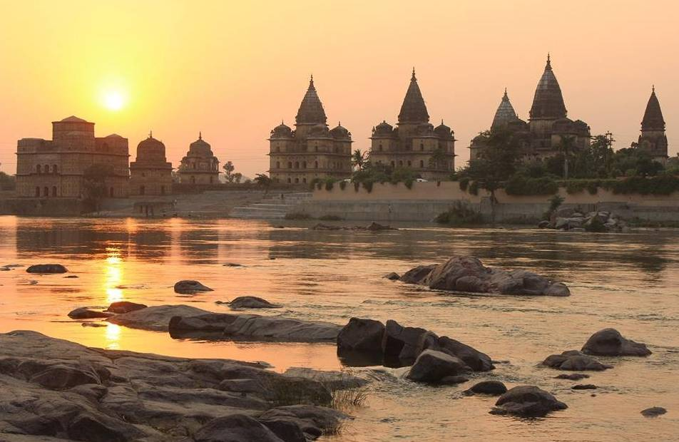

Introduction
Orchha Fort is a magnificent palace complex located in Orchha, a historic town in Madhya Pradesh. Situated along the peaceful Betwa River, the fort reflects the royal grandeur of the Bundela Rajput rulers.
Built during the 16th century, the complex includes palaces, temples and royal cenotaphs surrounded by scenic landscapes. Its timeless beauty makes it one of Central India’s most charming heritage destinations.

Historical Background
Orchha was founded in 1531 by Raja Rudra Pratap Singh, the first Bundela ruler of the region. He established the fortified palace complex as the royal capital.
Later rulers expanded the site with grand structures including Jahangir Mahal and Raja Mahal. The fort became an important political and cultural center.
Jahangir Mahal was specially constructed to honor Mughal Emperor Jahangir during his visit, symbolizing diplomatic relations between the Bundelas and the Mughal Empire.
Major Attractions Inside Orchha Fort
Jahangir Mahal
One of the finest examples of Indo-Islamic architecture. Its balconies, arched gateways and domes create a striking appearance.
Raja Mahal
Known for beautiful murals depicting religious stories, royal ceremonies and mythological themes.
Rai Praveen Mahal
Dedicated to poet and musician Rai Praveen, celebrating Orchha’s artistic heritage.
Royal Chhatris
Elegant cenotaphs along the Betwa River honoring Bundela rulers.

Architecture and Design
Orchha Fort combines Rajput strength with Mughal elegance. Large courtyards, decorative balconies and high towers dominate the skyline.
The interiors of Raja Mahal feature colorful frescoes and paintings that have survived for centuries, offering insight into medieval art and culture.
Cultural Importance
Orchha became a center for art, music and literature under Bundela patronage. Its temples and palaces reflect deep spiritual traditions alongside royal luxury.
Today, the town remains one of India’s best preserved historic settlements.
Travel Guide
- Location : Orchha Madhya Pradesh
- Timings : 8:00 AM – 6:00 PM
- Ticket : ₹40 Indian Visitors (Approx)
- Best Season : October to March
- Nearest Railway : Jhansi (18 km)
Visitor Tips
- Visit early morning for photography.
- Explore Betwa River chhatris during sunset.
- Hire a guide to understand mural artwork.
- Wear comfortable walking shoes.
Conclusion
Orchha Fort stands as a beautiful blend of history, art and natural beauty. Its palaces, murals and riverside monuments make it one of India’s most peaceful heritage destinations.